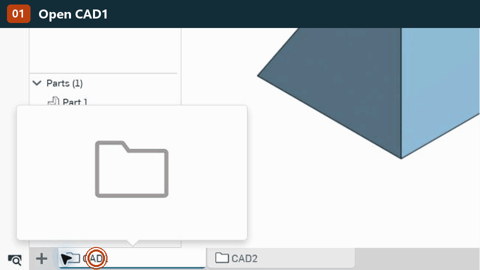
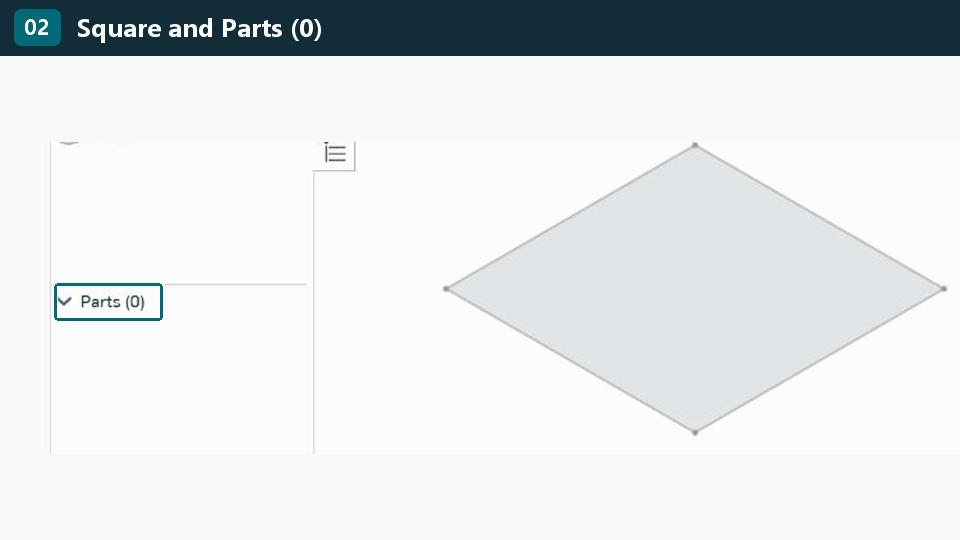
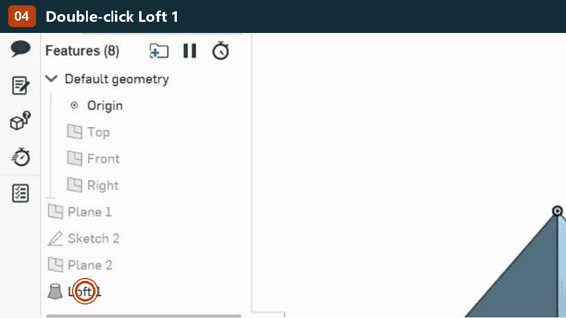
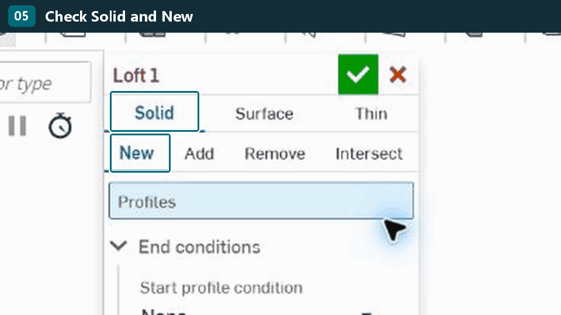
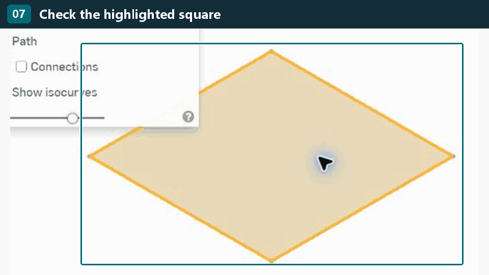
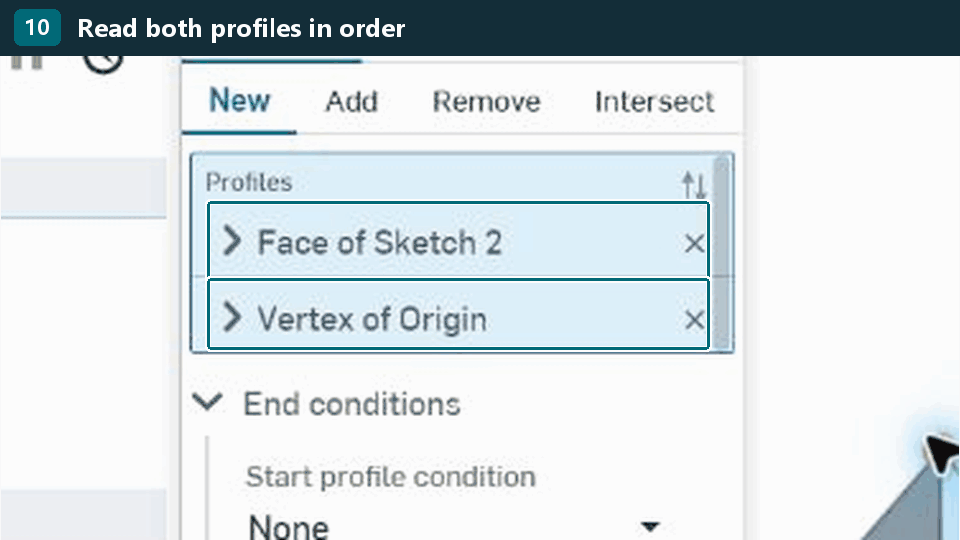

Start with the existing 5 in × 5 in square in Sketch 2. Its plane sits 5 in below the Origin. Select the square and then the Origin to form the pyramid.
If your square is in your own Onshape document, open the Part Studio containing it and start at step 02.
如果正方形画在你自己的 Onshape 文档里，打开画有正方形的 Part Studio，然后从第 02 步开始。
01Open the student’s Part Studio打开学生的零件工作室
In the Traffic Cone document, click CAD1, open the CAD2 folder inside it, then click the Part Studio 2 tab. There is another CAD2 folder at the document root. Use the one inside CAD1.
在 Traffic Cone 文档中点击 CAD1，进入它里面的 CAD2 文件夹，再点击底部的 Part Studio 2 标签。文档根目录还有一个同名的 CAD2，请选 CAD1 里面的那个。

02Check your starting point确认从哪一步开始
Look at the feature list on the left. If you see the flat square and Parts (0), start the new Loft in step 03. If you see a pyramid with Loft 1 and Parts (1), use the practice route in step 04. Choose the matching option at the top of this page to show your steps.
看左侧特征列表。若画布上是平面正方形，左边显示 Parts (0)，从第 03 步新建放样。若已有金字塔，左边显示 Loft 1 和 Parts (1)，从第 04 步开始练习。可在页首选择对应情况，只看自己需要的步骤。

03Open Loft from the toolbar从工具栏打开 Loft
Click the small down arrow in the Extrude tool group on the top toolbar. Click Loft in the menu. This group may show the icon for the last tool used.
04Reopen the existing Loft for practice打开已有的 Loft 进行练习
Double-click Loft 1 in the left feature list. In the blue Profiles box, click the small gray × beside Vertex of Origin first. Then click the small gray × beside Face of Sketch 2. Stay in this dialog. The flat square should be visible.
双击左侧特征列表的 Loft 1。在蓝色 Profiles 框内，先点击 Vertex of Origin 右端的小灰叉，再点击 Face of Sketch 2 右端的小灰叉。保留当前窗口，画布上应能看到平面正方形。

05Check the Loft settings检查放样设置
In the Loft dialog, check that Solid and New are selected. Click either label if you need to select it. Under End conditions, leave both Start profile condition and End profile condition set to None.
在 Loft 窗口中确认 Solid（实体）和 New（新建）已选中；若未选中，点击对应标签。在 End conditions 下，让 Start profile condition 和 End profile condition 都保持 None。

06Click inside the square点击正方形内部
Click inside the blue Profiles box. Move onto the gray square in the canvas and click once well inside its filled area. Leave some space between your pointer and the edges.
Read the first row in Profiles. It should say Face of Sketch 2. The square has a tinted fill and an orange outline. If a different entry appears, click its small gray ×, then click the square interior again.
看 Profiles 的第一行，应显示 Face of Sketch 2。此时正方形内部带有颜色，轮廓为橙色。如果名称不同，点击那一行右端的小灰叉，再次点击正方形内部。

08Find the Origin on the canvas在画布上找到 Origin
Keep Profiles active. Look above the middle of the square for a small black bullseye. The Origin row under Default geometry gives you the name. The point you will click in step 09 is on the canvas.
Move the tip of your pointer to the exact center of the bullseye and click once. Keep the mouse still as you click. The enlarged view shows the target, and a pointed pyramid should appear.
Read the two Profiles rows from top to bottom. The first should be Face of Sketch 2 and the second Vertex of Origin. Look for the pointed preview and Parts (1) in the left panel.
从上往下检查 Profiles 的两行。第一行应是 Face of Sketch 2，第二行应是 Vertex of Origin。画布应显示尖顶预览，左侧零件列表应显示 Parts (1)。

11Save the new Loft保存新建的放样
Click the green checkmark at the top of the Loft dialog. The dialog closes and the pyramid remains. Check that the feature list contains your Loft and that the left panel shows Parts (1). This recording shows Loft 2 because a Loft 1 already existed in the demonstration workspace. Your first Loft may be Loft 1. You are finished.
Click the large red × at the top of the Loft dialog, beside the green checkmark. This cancels your practice edits. Check that the original pyramid is still visible and that the left panel lists Loft 1 and Parts (1).
点击 Loft 窗口顶部绿色对勾旁的红色大叉。这会取消本次练习中的编辑。确认画布上仍有原来的金字塔，左侧仍显示 Loft 1 和 Parts (1)。